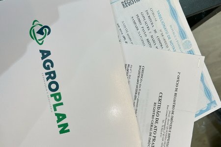

A Assessoria de Cartório é o ato de facilitar os trâmites cartorários. A principal função é avaliar o processo e instruir o proprietário, mostrando ao mesmo, a viabilidade de ter sua documentação completamente regularizada. Dessa forma, nós, da AGROPLAN, criamos o setor de Assessoria de Cartório, pensando justamente em facilitar a vida dos nossos clientes, exaurindo-os do desgaste com deslocamentos e a falta de informações nos trâmites que envolvem os órgãos competentes para o saneamento de todas as burocracias para concretizar a regularização de uma escritura.
A Assessoria ela inicia logo no Georreferenciamento, que é o primeiro passo para regularizar o imóvel junto ao Cartório de Registro de Imóveis da comarca competente. Após a conclusão da parte técnica, ofereceremos o serviço de Assessoria ao cliente com o intuito de entregar comodidade ao mesmo, após serem colhidas as assinaturas nas peças técnicas, organizamos a pasta e prenotando todo material no cartório, onde será feita a Averbação dos documentos (Georreferenciamento, CCIR, ITR, CAR e demais informações ausentes na matrícula). Caso o proprietário esteja vendendo o imóvel, carece da lavratura de uma escritura de compra e venda no Tabelionato de Notas, e em seguida levada para registro no Cartório de Registro de Imóveis, concluindo a transferência da matrícula e registro da nova escritura no nome do atual proprietário (comprador).